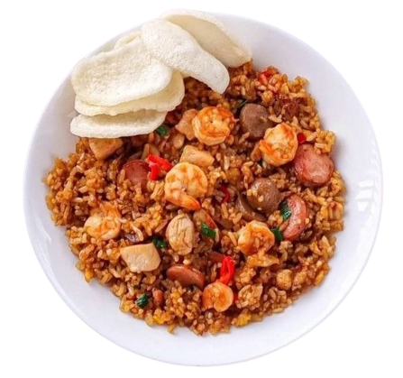

Nasi Goreng Seafood
Bahan bahan
- 1 mangkok nasi
- 50 gr ayam, potong kecil
- 6 buah udang, bersihkan
- 5 buah bakso, iris
- 1 butir telur ayam
- 3 siung bawang merah, parut
- 2 siung bawang putih, parut
- 1 buah cabe merah, iris
- 1 sdm saos tiram
- 2 sdm kecap ikan
- 1 sdm kecap asin
- 12 sdm kecap manis
- 1 batang daun bawang
- Garam, gula, kaldu secukupnya
- Minyak untuk menumis
Cara Memasak
- Panaskan minyak secukupnya untuk membuat telur orak arik, kemudian masukkan semua toping. Sisihkan
- Tumis bawang merah dan bawang putih hingga harum dan matang. Lalu campur dengan toping tadi
- Masukkan kecap ikan, cabe merah, dan daun bawang
- Masukkan nasi. Beri saos tiram, kecap asin, kecap manis, garam, gula, dan kaldu secukupnya lalu duk rata